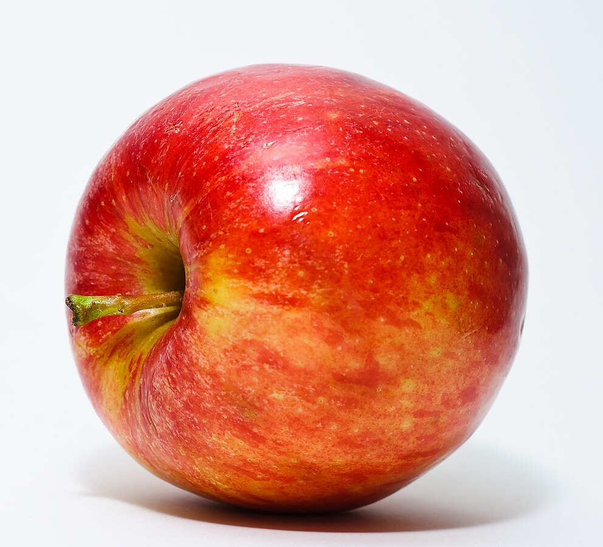

<p>リンゴの写真</p>

<a href="https://commons.wikimedia.org/wiki/File:Red_Apple.jpg"> Red Apple. Used white paper behind apple and above apple and bounced SB-600 at 1/4th power.</a> © 2009 by <a href="https://www.flickr.com/people/24340456@N03">Abhijit Tembhekar</a> is licensed under <a href="https://creativecommons.org/licenses/by/2.0/">CC BY 2.0</a>
